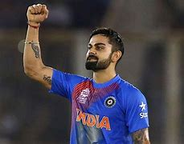

THE PERSON WHO INFLUENCES ME A LOT
INFLUENCER

Virat Kohli
In the world, most of people need to change themselves. It might be they watched somebody who inspires them to do something that never done before and I am one of those people. I love Cricket so much since I watched Virat Kohli on a TV. He is an Indian cricket player and very famous for his talent and skills of competition which are reasons for me want to be like him. I disliked exercising very much I had never thought that sports were very exciting. I wasn't interested in any sports.
I was very an inert person and didn't prepare to study, do activities with cousins, or the challenging things until I had seen the fierce Cricket game that Virat Kohli played.
I felt enjoyable and wanted to play, the same time I really admired his talent, skills and body movement which are the
important things for me or can say another way that I want to change myself form an inert person into an enthusiastic person.
Here are the resons for Virat Kohli’s success
. Fitness is the success factor for Virat Kohli. Gone are the days when you could see unfit players in the Indian cricket team, now the level of cricket is quite high and the schedules are quite busy. If you are not fit enough you cannot play three formats of cricket.
According to Virat, fitness is always a key factor for him to be successful in cricket. Virat is one of the fittest cricketers of the present age. You can see his running speed and other efforts during any match. So, one of the main secrets of Virat Kohli’s success is his physical form which gives him flexibility and speed on the pitch for better performance. Now there are so many young people who are following Virat’s advice to become a healthy and fit person.
. Self-confidence is one of the main reasons for Virat Kohli’s success. Most of the time, many players cannot perform well in international cricket and the main cause of this failure is nothing but lack of self-confidence. While these players have performed well nationally, yes the pressure in international cricket is always different and you can only achieve success in this format if you have enough confidence in yourself.
According to Virat Kohli, believing in yourself is always limited and it is a positive impurity that always prompts you to give your best in the field and then no one can stop you from being successful. Not only Virat Kohli, but there are a lot of great personalities who strongly believe that self-confidence is one of the keys to success.
Go to Virat’s Insta profile
Go to Virat’s Twitter profile
About the programmer
My name is Shreyansh. I am a teenager who lives in Hajipur,Vaishalli,Bihar. I learned HTML programming in year 2020 during the lockdown. Since my chilhood , I was intrested in tech related topics. In this programming world my cousin helped me a lot. Now, It's almost 1 year of my programming

Shreyansh
(The Programmer)
A special message from the Programmer
It's my pleasure to share this website with you all. It is simple HTML based website. I am just a beginner in this field and am trying to be best in this field. If you have any problem with this website you can tell me. I will try my level best to improve that.
0